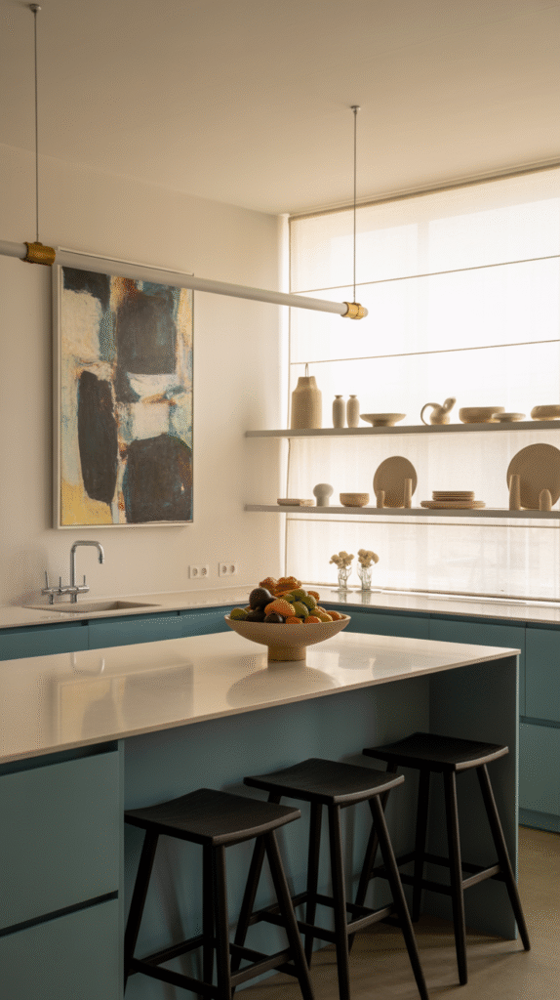
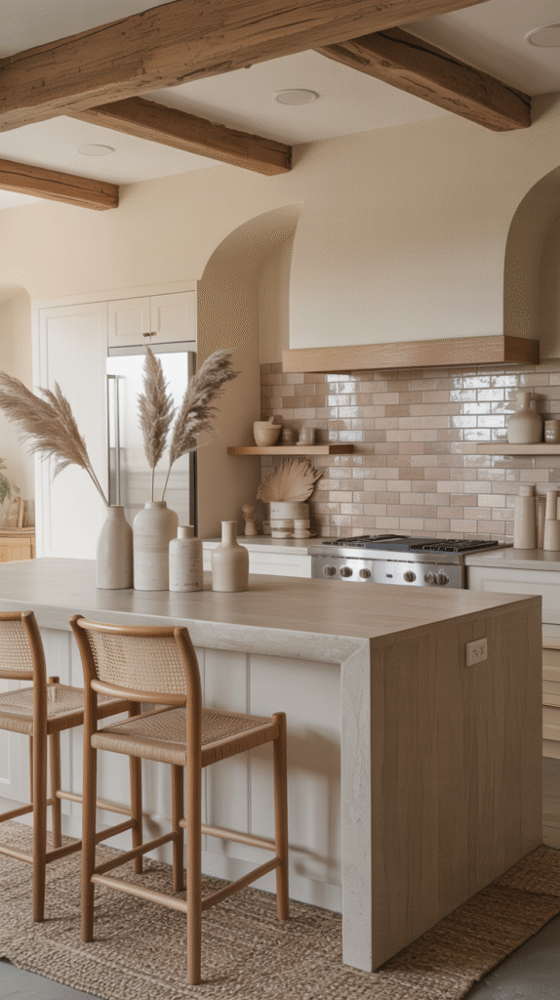
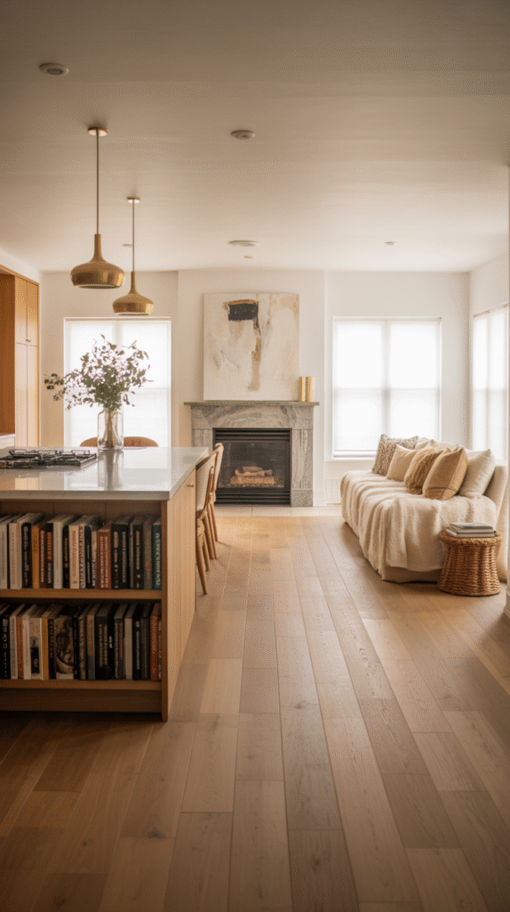
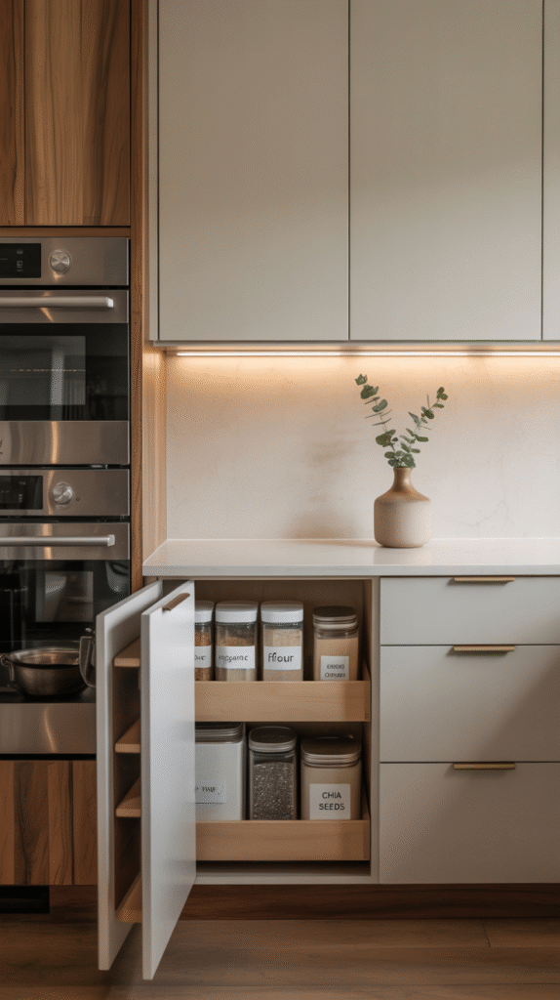
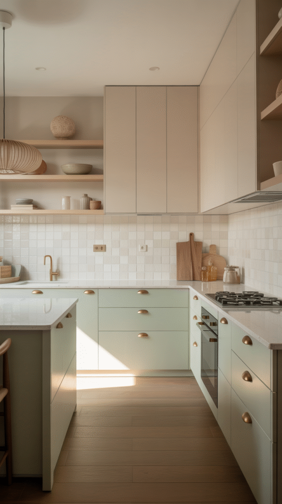
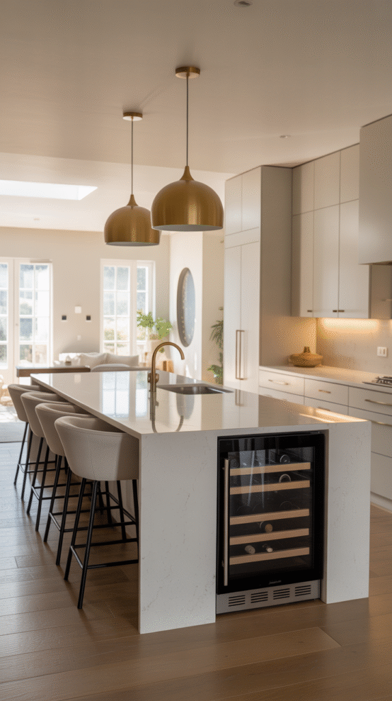
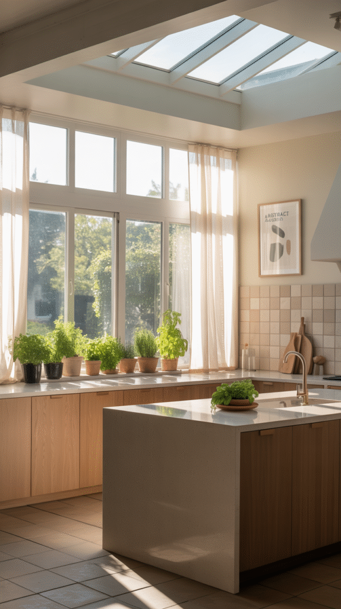
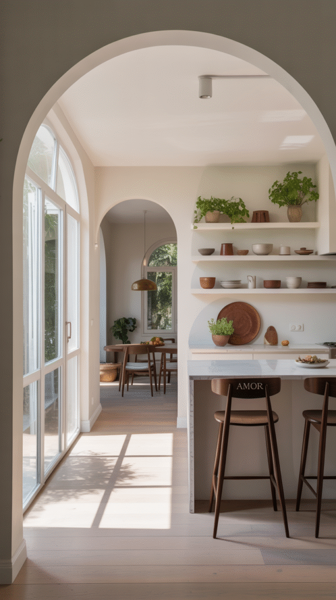

Just about everyone wants a kitchen that feels bigger than its actual square footage suggests, whether that's a cramped city apartment or a sprawling suburban layout with room to spare.
Getting that light, airy feeling genuinely doesn't require knocking down five walls. It's almost always about choosing the right handful of design moves rather than the overall size of the renovation.
Open kitchens also just feel better to cook and live in day to day. They keep whoever's cooking part of the conversation instead of isolated behind a wall, and they make an entire home feel noticeably more expansive without a full gut renovation.

9 Ways to Open Up a Kitchen
1. Prioritize the Flow, Not Just the Photos
A kitchen that photographs beautifully but trips people up in real life isn't actually a well-designed kitchen, no matter how good it looks online.
At least three feet of clearance around major zones, between the island and the cabinets, around the dining area, and across the classic fridge-to-stove-to-sink triangle, keeps the space genuinely functional as well as attractive.
Function really has to come first here, with style layered on afterward. A beautiful kitchen that's difficult to actually move through isn't beautiful at all in any way that matters.

2. Go Minimal, But Make It Personal
A minimalist kitchen doesn't have to feel impersonal, and open kitchens in particular thrive on minimalism since it keeps the eye moving and the whole space flowing.
One large statement art piece instead of a dozen small frames, favorite cookware displayed openly on shelves, or quirky bar stools that actually reflect personal taste all keep a pared-back kitchen from reading as cold or sterile.
Minimal doesn't mean boring here. It means intentional, and a well-chosen sculptural light fixture tends to get noticed even in the simplest, most pared-down room.
3. Add Texture Instead of Clutter
An open kitchen can go cold fast without the right texture layered in somewhere. The goal is airy, not sterile, and texture is exactly what bridges that gap.
Wood grain cabinets or ceiling beams add warmth, a herringbone or glossy subway tile backsplash adds visual interest, and woven stools or pendant lights soften all the sharp, open lines around them.
Mixing a few materials without overloading the room keeps it calm rather than boring, texture should add interest to a space, not compete for attention within it.

4. Blend the Kitchen Into the Living Space
One of the best parts of an open kitchen is how genuinely connected it feels, cooking stops being a solitary task and becomes part of whatever's happening in the room right next door.
Matching flooring throughout, a color theme that carries from the kitchen into the living area, and shared materials like wood or metal across both zones make the two spaces feel like one continuous room instead of two separate ones.
A two-sided fireplace between the two zones takes things even further, for anyone leaning into a cozier, more luxe version of the open concept overall.

5. Let Smart Storage Keep the Counters Clear
No kitchen, regardless of its actual square footage, feels open with cluttered countertops. Clean surfaces do far more for the sense of space than the room's real dimensions ever will.
Pull-out pantry drawers tucked into narrow gaps, toe-kick drawers for baking trays, ceiling-height cabinetry for rarely used items, and a hidden appliance garage for the toaster and blender all keep the chaos out of sight entirely.
If it doesn't need to live on the counter, it shouldn't, that one rule alone does more for an open feeling than almost any single design choice available.

6. Keep the Palette Light and Cohesive
Color does more work toward that open, spacious feeling than almost any other single decision made in the room.
White paired with warm wood reads as fresh and timeless, soft gray with brass hardware feels classy without ever being stuffy, and beige with matte black stays grounded while still feeling modern.
Matching the walls, cabinets and backsplash to similar tones blurs the boundaries between them, and that blurred boundary is exactly what ends up reading as spacious to the eye.

7. Build the Island Around Openness, Not Just Chopping
A kitchen island with the right footprint can genuinely transform the whole room, but only if it's chosen with the open concept in mind rather than tacked on as an afterthought.
A sleek, minimal island with waterfall edges, open shelving underneath for cookbooks, and stools that tuck fully away keeps the flow uncluttered instead of adding yet another obstacle to walk around.
Cooking while friends sit around the island chatting changes the whole feel of the room, nobody ends up isolated at the stove while everyone else gathers somewhere else entirely.

8. Maximize Natural Light
Light is really the secret ingredient behind any open kitchen that actually feels spacious rather than just big on paper.
Swapping heavy curtains for sheer panels, adding a skylight, installing glass doors to a patio, or even trying a greenhouse-style ceiling all flood the space with the kind of light a kitchen needs to feel genuinely open.
Paint color plays its part here too, soft whites, pale grays and gentle blues bounce light around a room far better than anything darker ever manages to.

9. Lose the Barriers, Visually or Literally
An open kitchen doesn't require a full sledgehammer renovation to pull off. Losing the barriers can be as simple as rethinking what actually separates one zone from the next.
Open shelving instead of bulky upper cabinets, a pass-through cutout to the next room, an archway that connects spaces without fully merging them, or a half wall doubling as a breakfast bar all create that open feeling without any full demo involved.
Sightlines matter more than square footage here, keeping them open is really what makes a kitchen read as bigger, with no construction required at all.

Final Thoughts
Open kitchens aren't just a passing trend, they're genuinely practical. They bring people together, make cooking feel a lot less isolating, and give an entire home a more expansive feeling without necessarily requiring a full renovation to get there.
A kitchen that currently feels more like a closet than a gathering space is usually just a few design tweaks away from genuinely opening up. No sledgehammer required, just a clear sense of which of these nine moves actually fits the space in question.